Настройка VPN-соединения (от server.by)
Зайдите в "Сетевое окружение" и слева, в меню "Сетевые задачи", выберите "Отобразить сетевые подключения". Далее в том же меню ( в окне "Сетевые подключения" ) выберите "Создание нового подключения". В появившемся окне нажмите "Далее". Затем выберите "Подключить к сети на рабочем месте" и нажмите "Далее".
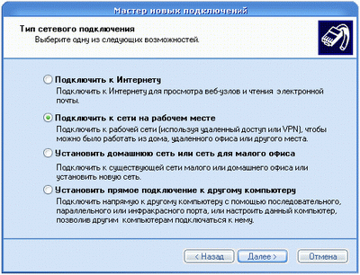
Выберите "Подключение к виртуальной частной сети" и нажмите "Далее".
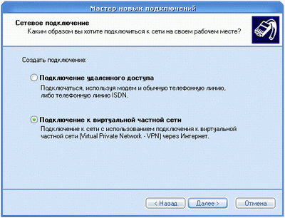
Введите имя подключения, в нашем случае "Server VPN 2", и нажмите "Далее".
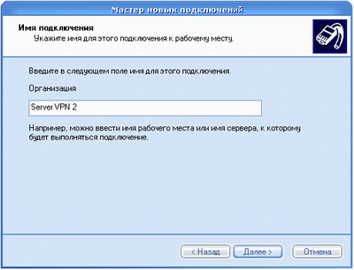
В следующем меню выберите "Не набирать номер для предварительного подключения" и нажмите "Далее".
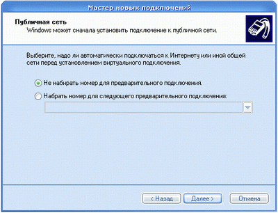
Введите адрес VPN-сервера, в нашем случае "172.16.5.1", и нажмите "Далее".
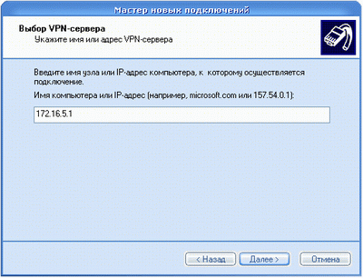
По желанию можно "Добавить ярлык подключения на рабочий стол", выбрав данную опцию. После этого нажмите "Готово".
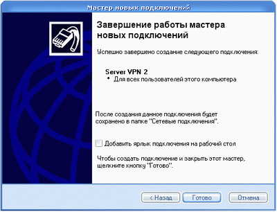
Откройте меню "Подключение" с помощью созданого подключения "Server VPN 2". Далее нажмите кнопку "Свойства".
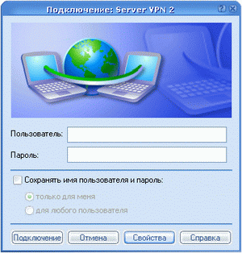
В появившемся окне выберите вкладку "Безопасность", в которой выберите "Дополнительные (выборочные параметры)". Нажмите "Параметры..".
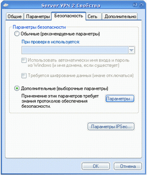
Во вкладке "Шифрование данных" выберите "необязательное ( подключиться даже без шифрования" ). Там где "Разрешить следующие протоколы" выберите только "Незашифрованный пароль (PAP)" как показано на рисунке, остальные галочки просто уберите. Нажмите "Ok".
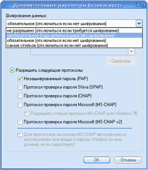
В появившемся окне нажмите "Да".
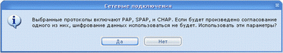
Введите свое имя пользователя и пароль в соответствующее меню. По желанию можете их сохранить, чтобы в дальнейшем не вводить снова.
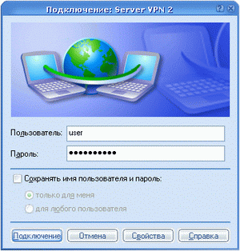
Нажмите "Подключение".